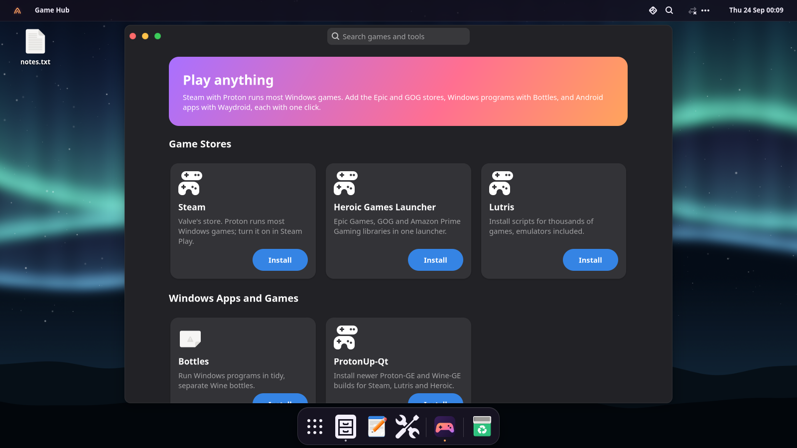

Built for developers
Open the terminal. Start working.
No afternoon of setup. The essentials are already installed and configured, and heavier toolchains are one click away, always at their latest version.
~/code/api main py 3.13 ❯ git pull && docker compose up -d ✔ Container api-db-1 Started ✔ Container api-web-1 Started ~/code/api main took 3s ❯ portop PORT PROTO PROCESS SERVICE / CONTAINER 5432 tcp postgres api-db-1 8000 tcp uvicorn api-web-1 3000 tcp node — [k] kill [o] open [f] filter [,] settings
Preinstalled and configured
Ptyxis, the terminal, has tabs, profiles and one-click shells inside your distrobox, toolbox and podman containers. Add an informative prompt (git status, language versions, command duration), Ctrl+R fuzzy history and sensible aliases. Docker starts on first use, so it costs nothing at boot.
portop shows what's using every port (process, systemd service or Docker container) and stops it with one key.
Dev Hub: your toolbox in one click
VS Code, VSCodium, Zed, IntelliJ, PyCharm, Android Studio, Rust, Go, Java, uv, Bun, Deno, GitHub CLI, kubectl, Terraform, AWS CLI, PostgreSQL, MariaDB, Redis, MongoDB, DBeaver, Postman, and the AI coding agents Claude Code and Codex (sign in with your subscription), plus Ollama for more local models. Each one installs from its official source, so you always get the newest release, and you see every step in a terminal.

AI for developers
Your terminal understands you.
With Aurora AI turned on, ask turns a sentence into a
command (it runs only if you say yes) and cmd 2>&1 | why explains a failure
and the fix. Right-click a source file in Files and ask about it, or search your projects
in Spotlight by name: Enter opens them in your editor.
Game Hub
Play anything.
Steam with Proton runs most Windows games. Game Hub adds the Epic and GOG stores (Heroic), Lutris, Windows programs with Bottles, newer Proton builds (ProtonUp-Qt), GameMode and MangoHud, and Android apps with Waydroid. One click each, from the sources their developers recommend.
